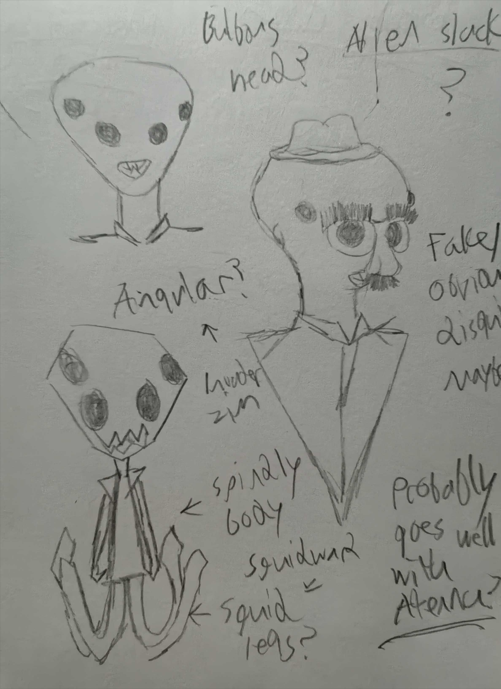
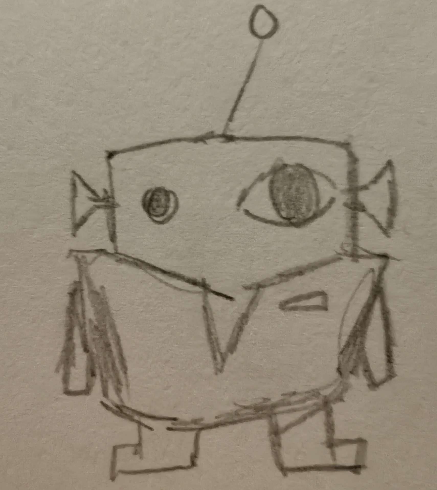

In the first term of my final year, I was required to secure an industry-relevant placement. For this, I acquired a brief from RaRa games to help create assets for a new co-op title. The general brief outline I received from RaRa games was a co-op game called Slackers. The primary concept of this game revolves around evil aliens infiltrating Human society with the intent to destabilise through their sabotage. Players take on the role of the Infiltrators, and it is their mission to cause as much havoc within the work environment as possible through deliberately inefficient, absurd and convoluted means, all while not getting found out by the Humans. The game is meant to be a wacky, silly experience, akin to the show Invader Zim if the titular protagonist were working retail to destroy Human society as an undercover alien agent.
My role for this project was as a Game artist with my primary focus on character concept art and development. In this role, I would formulate ideas for what the alien infiltrators could look like and what role they could fill, what the Human characters/NPCs would look like and any special characters (such as an antagonist character for the aliens to evade). Lastly, figure out what kind of environment these characters would find themselves in, create concept art for these ideas and ultimately 3D models for them.
Although I wasn’t given a specific brief relating to character design, I had negotiated with the client to place a focus on character concept & design. The generalised nature of the brief meant an absence of specificity in requirements. This meant much more flexibility and freedom in the direction I could approach the project. At the same time, this required a degree of interpretation with a focus on visual ideation. This meant the project focused heavily on concept art to remain generally consistent with the brief.
As this would be a solo project, I maintained what I believed was a reasonable scope. As such, production would be focused on creating the minimum amount of work required to clearly communicate the ideas of the project. Keeping the focus simple, I narrowed down the work to these two overarching goals:
- Designing an Alien Infiltrator character.
- Designing a Human character.
This would involve a standard alien infiltrator character which would serve as the player model for the game, and a Human antagonist character actively attempting to thwart the Alien scheme which the players must avoid. The idea was that everything else that came afterward would work to inform these two objectives. In addition, as my work would be developed in isolation, I came up with gameplay ideas alongside my character concepts that may or may not be a part of the final game, but that I thought would be fitting in Slackers.
There were three significant challenges which shaped pre-production. The immediate challenge of this project was the lack of groundwork beyond the basic information from the brief and discussions with the client through which the foundational ideas had to be built upon. Secondly, as mentioned prior, the project would be solo operation, meaning the work had to exist in isolation without being able to fit into an existing environment. Lastly, as the project would be tackled later in the academic timeline, there was less time to contribute to the project.
In previous projects, I usually approached with a fluid angle without any sort of management platform. For this project, I adopted the tool Trello, which is a simple to use platform that utilises Kanban-styled boards with lists and cards. By doing this, it mitigates the risk of losing track of project assets and progress, whilst also encouraging prioritisation. Trello can be used to break down projects into smaller segments, identifying what tasks are manageable and what tasks could be either discarded or left as optional goals. This was done to prevent scope-creep. Using Trello, I created a basic list of 4 cards to divide up my work into manageable and achievable tasks/ideas.
As a game artist, concept art is the first step in setting a visual direction and a tool for clarifying my creative vision. Concept art allows for rapid exploration of ideas and a quick avenue for iteration, while also serving to articulate creative intent for both the client and the artist. Given the lack of an art specific brief and the lack of an existing foundation for the game, this project gave me plenty of flexibility in the direction which I could go. To ground my ideas, my sketches focused on distinguishing Aliens from Human characters in a direction that would support the comedic aspects of the concept.
As the game would be a very humour-driven experience with a focus on the absurdity of the scenario, I decided on a simplistic art style for the characters. This placed a focus on exaggerating proportions for the characters, such as larger heads and wider eyes, which also supports readability in gameplay as each character would sport unique silhouettes that stand out amongst a busy game environment with multiple players. A simplified art style means that unique or bizarre features do not look odd and jarring on an already absurd character design. Additionally, with the solo development in mind, a simplistic art style was also an appropriate choice as designs could be easily iterated upon as compared to more complicated art styles.
My first goal was to create some basic Alien concept pieces. As player characters and outer space creatures, the aliens needed to be obvious and stand out amongst the Humans. Importantly, this meant figuring out how to translate aliens into disguised workers such as they could fit into a mundane workplace environment. An example of this is how to design bodies that could fit in uniforms that may be too small, too big, too short or too long for their anatomy, adding to the visual absurdity of the scenarios they find themselves in. At the same time, these alien designs must be viable from a gameplay standpoint, such as having limbs that could interact with the environment without being too over-the-top. Therefore, when conceptualising the alien design, I created a brief list of criteria of essential design concepts the Aliens had to roughly (But not always) obey:
- They must obey a vaguely Humanoid silhouette with their infiltration attire (Business suits, restaurant workers, etc) to sell the illusion that they fit in the workplace they are infiltrating.
- Their limbs must be able to fit their Human-designed attire or find creative ways to fit into them.
- They must look charming instead of nightmarish. As the game is meant to be cartoony and absurd, a charming or cute design elevate the comedic factor by presenting the terrifying evil infiltrators as intentionally unintimidating.
Based on these criteria, I gathered a moodboard of several alien/monster/animal characters roughly fitting the criteria to use as a base for inspiration.

A prominent inspiration was Octodad, titular character of the game Octodad, with his lanky octopus’ limbs disguised as arms and legs. The character’s use of his tentacles as limbs to mimic arms and legs would be interesting to see in a busy retail environment, especially if they were flailing about hitting objects on accident (or on purpose). Another source of inspiration is the Mudokons, the suit-wearing antagonists of the Oddworld franchise. They stood out to me as not only being suit-wearing aliens with completely different bodies beneath, but also for unique use of hands as their legs (with their actual legs being small), resulting in very wobbly movement in the games.
With the inspiration in mind, multiple concepts of the alien infiltrator bodies were created. Although I initially thought of the aliens all sharing a single customisable appearance but with unique colours, I decided instead that multiple unique aliens with their own special mechanics would make for more varied gameplay.
The first alien character is a mix of the traditional grey alien with the Octodad limbs. This character is meant to be a scout/lookout, its four eyes mean that important objects are highlighted for this character. It was with this character that I had to decide between a smoother outline or a blockier outline, ultimately favouring the blockier outline as the sharper silhouette would fit a more sinister nature. It is at this point I decided that, apart from the short infiltrator, the aliens should have a thinner body shape in general but have comically large heads that juxtapose with the body. Multiple tentacle limbs which could interact with/hold on to multiple objects simultaneously, or grip heavy objects with multiple limbs to move them.
The second alien design was blocky and rectangular in shape. Mismatched eyes evoke an otherworldly/monstrous quality and is also very cartoonish. The idea being that the Alien infiltrators have asymmetrical body parts and shapes that would easily make them stand out both from a gameplay perspective and from a design perspective. Being the shortest of the alien infiltrators means he can reach places that the taller aliens would be unable to, such as navigating vents, or hiding under tables, and access items that may otherwise be out of reach for the other characters. He has large ears, which could mechanically function as detection for any pursuing Humans (Such as giving indicators on the player’s screen).

The final Alien Infiltrator has a bug like appearance. With this character, I thought of having a long-distance psychic alien with the ability to manipulate/levitate/throw objects or to temporarily daze/confuse their victims or pursuers. To visually signal their psychic nature, their eyes are dark with light irises which are archetypal of characters with special powers. They also have a central antenna with three orbs to imply an emitter through which they project their psychic powers.
A shared theme between the latter two alien characters is the inclusion of at least one antenna, which I thought could act as radio/psychic communication between the different characters (Which could be in-game chat or voice chat) only audible by players.

When deciding how to design the Human characters, the designs align more with the mundane and normal to keep the aliens as absurd and strange. Drawing from familiar archetypes within a job. The Human designs also serve as a visual reference to distinguish the Human body shape from the Alien body shape. As an example, they were designed to be rounder and wider than the aliens.

One of the focuses for the Humans was a Police Chief/Inspector type of character that acts as the antagonist of the game. They appear in the infiltrated workplace to investigate the activities of the alien infiltrators and exist either as an ever-present obstacle that the Slacker aliens must avoid (Or not act suspicious around so as not to draw attention), or as a stage boss that they must confront. His first outfit would evoke the typical Police Chief/Officer, coming to investigate complaints within the workplace. It is highly recognisable and an immediate sign of trouble for the players to look out for. His second design is much more civilian/plain, which can initially hide the fact that the character is a threat, where he can then reveal that he is an investigator.
The character is designed to be stocky and proportionally large which would visually contrast them with other smaller Human characters, but especially with the thin/lanky Alien infiltrators. Being bulky would indicate the character’s strength which would be important if the character was a dangerous obstacle but could also indicate that they move slower and could be easy to avoid. His most prominent feature is his monobrow and moustache combination, which he uses to make expressions. Eyes are important for characters to make expression and are typically used to humanise characters and give the audience a level of attachment, so as the antagonist, the Inspector lacks them. However, his exaggerated facial hair and monobrow still allow him to make expressions whilst simultaneously giving him a cartoonish quality, which adds to the comedy.
Client feedback on both the Alien and Human designs was positive.
By understanding what kind of environment these characters would find themselves in, I would get a better idea of how they could fit in and interact with the game world. The environment needed to fit co-operative play, meaning a large space that multiple players could simultaneously interact with and sabotage.
A few settings came to mind: A chemical plant which the aliens would try to sabotage and potentially explode, and a retail shop with a focus on customer interaction with the added chaos of hundreds of interactable shopping items. The idea I settled on was a workplace that plays on the absurd and inefficient sabotage, being a fast-food environment, with the aliens providing poor food services as an attempt to destabilise the local Human food sector.

The aliens will purposefully create poor food which gives the Human customers food poisoning but would simultaneously have to serve high-quality food to not rouse the suspicion of the Investigator. Continuing with the theme of the familiar and mundane meets the absurd, the design of the fast-food place internally would exaggerate the typical layout, whilst externally appearing as a simple boxy structure.
Sustainability is an important factor for this project. I personally tend to over-scope my projects beyond my own ability to tackle, and as a result often leave items in an incomplete or unpolished state. Additionally, I often do not approach projects with a concrete plan and resort to retroactively planning around my existing work, which is an unsustainable approach to game development especially when considering deadlines and quotas that must be met.
Sustainable Development Goal 12 (The Global Goals, 2025) is concerned with environmental aspects, promoting sustainable consumption and production practices to reduce waste, overproduction and in turn their environmental, social and economic impacts. While typically related to physical, real-world products and waste, SDG 12 also applies to digital production such as Game Development. It introduces restraint within development by encouraging managed scope to avoid feature creep and excessive asset production. Through producing a managed number of reusable assets, it reduces wasted development time, labour, excess storage use, and work on products that may never be shipped. Additionally, it can help put proper focus on a project. By doing this, SDG 12 aims to reduce unsustainable game development practices such as crunch culture.
SDG 12 aligns with this project especially when considering the limited development time, it could be afforded and lack of specificity within its brief, hence the focus on concept art. This aligns as it functions as a low-cost (both in time and effort) iterative tool through which ideas can be quickly communicated and scope focused. It allows for more decisive decision making by giving out a large variety of ideas which can be sorted through. By doing this, it allows the project to operate on a tighter schedule without wasting development time on excessive or less project relevant items. Platforms such as Trello align well with SDG 12 as they are vital for scope control and reducing overproduction and wasted energy, which in turn reduces burn out as well as crunch. As an example of how concept art has aligned, the initial concepts I created for this project allowed me to expand the core ideas of the game significantly, such as generating a basic gameplay loop.
Even though my work on the project was limited, Slackers has been very valuable in teaching me how to operate independently as an artist, especially how to interpret generalised briefs and create concepts from them, and how to prioritise development to more effectively make use of development time. The experience has revealed to me the difficult challenges one must overcome when operating as a solo designer. Additionally, it has given vital insight into the time constraints involved in client work, not just from the project itself, but also from fitting a project into an existing and busy schedule.
A significant drawback of this project was the lack of clear communication and feedback between artist and client. Communication took place through informal discussions, where feedback was also briefly given. It highlights the importance of establishing clear lines of communication as well as checkpoints and design specifications. This is a key issue that I must learn to tackle as it further reflects the challenges I may face when entering the wider video games industry, especially when pursuing client-based work. For future projects, I will look to introduce structured feedback based to ensure clarity and ensure that the work meets client expectations throughout the development process.
Although the project did not reach a production stage, the conceptualisation process has produced a viable gameplay loop with a multitude of unique characters. To safeguard future projects, a core focus will be to plan with sustainability in mind by establishing checkpoints to reach. Furthermore, there will be a more active effort to interact with future clients, especially early on to ensure that both parties have clarity and are fully aware of any developments.
In conclusion, this project has been an important lesson in independent practice. It will help prepare similar future endeavours within the game art industry, especially regarding artist and client interaction.